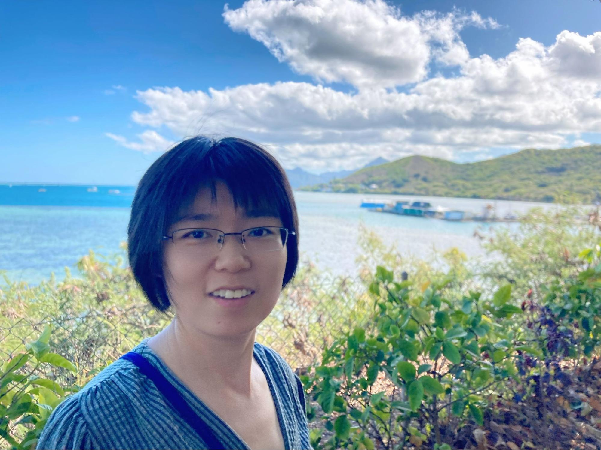

Jie (Jessie) Ren

Computational Biology and Bioinformatics; Machine learning; Statistical Modeling
Twitter Github Google Scholar
E-mail: jie dot ren dot usc (at) gmail.com
I am a Senior Research Scientist in Google Research Brain Team. Previously, I received my PhD in Computational Biology and Bioinformatics and MSc in Statistics at the University of Southern California. I am interested in three primary areas, (1) out-of-distribution (OOD) detection in deep learning, (2) uncertainty estimation and robustness of large language/ vision models, and (3) the development of accurate and reliable machine learning algorithms and statistical methods for biological and medical studies. My objective is to develop reliable AI solutions that can be safely deployed in real-world applications, advancing progress in sciences and humanity.
News
- 12/2023: Our study on selective generation for large language models, "Self-evaluation improves selective generation in large language models”, will be presented (spotlight) at NeurIPS 2023 I Can’t Believe It’s Not Better! (ICBINB) Workshop [paper].
- 12/2023: Two papers studying the uncertainty estimation in language generation models are accepted by ENNLP 2023: “Improving the Robustness of Summarization Models by Detecting and Removing Input Noise”[paper], and “On Uncertainty Calibration and Selective Generation in Probabilistic Neural Summarization: A Benchmark Study" [paper].
- 07/2023: Our work on prompt selection and prompt ensemble for multimodal models, "A simple zero-shot prompt weighting technique to improve prompt ensembling in text-image models", will be presented at ICML 2023. [paper] [twitter] [code] .
- 06/2023: Our paper "Improving Zero-shot Generalization and Robustness of Multi-modal Models" is accepted by CVPR 2023. Congratulations to Yunhao Ge. [paper] [twitter] [code] .
- 05/2023: Our paper "Out-of-Distribution Detection and Selective Generation for Conditional Language Models" is accepted (spotlight) by ICLR 2023. [paper] [twitter] .
- 07/2022: Together with my colleagues at Google, we release a framework, Plex, for reliability in large pre-trained models. Please check out our latest blog post to learn more. [blog] .
- 01/2022: Our new AI blog post is out :) It walks through our recent paper on enabling dermatology AI systems to detect the presence of conditinos unseen in training [blog] .
- 12/2021: Our paper "Exploring the Limits of Out-of-Distribution Detection" [paper] will be presented at NeurIPS 2021.
- 07/2021: Together with Polina Kirichenko, Haleh Akrami, Sharon Yixuan Li and Sergül Aydöre, we are going to lead a breakout session at July 21 7:25 pm ET at WiML Un-Workshop at ICML 2021 on "Does your model know what it doesn’t know? Uncertainty estimation and OOD detection in deep learning."
- 07/2021: Our paper "A Simple Fix to Mahalanobis Distance for Improving Near-OOD Detection" [paper] [poster] will be presented at ICML 2021 UDL workshop.
- 07/2021: Our paper "Exploring the Limits of Out-of-Distribution Detection" [paper] will be presented at ICML 2021 UDL workshop.
- 12/2019: We will present our work of "Likelihood Ratios for Out-of-Distribution Detection" at NeurIPS 2019. [paper][paper] [code] [poster] [3-minute video] [blog]
- 06/2019: I am joining Google Brain as a Research Scientist.
- 06/2018: I am joining Google Brain AI Residency program.
- 03/2018: Our work is highlighted in Nature News titled "Machine learning spots treasure trove of elusive viruses Artificial intelligence could speed up metagenomic studies that look for species unknown to science.".
- 04/2017: I am honored to receive the prestigious USC PhD Achievement Award (6 winners university-wide per year).
- 03/2017: I am honored to receive the Women in Science and Engineering Travel Grant.
- 04/2016: I am honored to receive USC CAMS Graduate Student Prize for Excellence in Research with a Substantial Mathematical Component (2 winners university-wide per year).
Publications
Out-of-Distribution Detection in Deep Learning
- Building One-class Detector for Anything: Open-vocabulary Zero-shot OOD Detection Using Text-image Models. Presented at the ICML workshop on Knowledge and Logical Reasoning in the Era of Data-driven Learning (2023). Yunhao Ge*, Jie Ren*, Jiaping Zhao, Kaifeng Chen, Andrew Gallagher, Laurent Itti, Balaji Lakshminarayanan.[paper]
- Out-of-Distribution Detection and Selective Generation for Conditional Language Models. ICLR (2023). Jie Ren, Jiaming Luo, Yao Zhao, Kundan Krishna, Mohammad Saleh, Balaji Lakshminarayanan, Peter J. Liu.[paper]
- A Simple Approach to Improve Single-Model Deep Uncertainty via Distance-Awareness. Journal of Machine Learning Research 23 (2022): 1-63. Jeremiah Zhe Liu*, Shreyas Padhy*, Jie Ren*, Zi Lin, Yeming Wen, Ghassen Jerfel, Zack Nado, Jasper Snoek, Dustin Tran, and Balaji Lakshminarayanan.[paper]
- MLR-OOD: A Markov Chain Based Likelihood Ratio Method for Out-Of-Distribution Detection of Genomic Sequences. Journal of Molecular Biology (2022). Xin Bai, Jie Ren, Fengzhu Sun.[paper][slides]
- Exploring the Limits of Out-of-Distribution Detection. NeurIPS (2021). Stanislav Fort*, Jie Ren*, and Balaji Lakshminarayanan.[paper]
- A Simple Fix to Mahalanobis Distance for Improving Near-OOD Detection. Presented at the ICML workshop on Uncertainty and Robustness in Deep Learning (2021). Jie Ren, Stanislav Fort, Jeremiah Liu, Abhijit Guha Roy, Shreyas Padhy, and Balaji Lakshminarayanan. [paper] [poster] [code]
- Does Your Dermatology Classifier Know What It Doesn't Know? Detecting the Long-Tail of Unseen Conditions. Medical Image Analysis 75 (2022): 102274. Abhijit Guha Roy*, Jie Ren*, Shekoofeh Azizi, Aaron Loh, Vivek Natarajan, Basil Mustafa, Nick Pawlowski et al. [paper] [blog]
- Revisiting One-vs-All Classifiers for Predictive Uncertainty and Out-of-Distribution Detection in Neural Networks. Presented at the ICML workshop on Uncertainty and Robustness in Deep Learning (2020). Shreyas Padhy, Zachary Nado, Jie Ren, Jeremiah Liu, Jasper Snoek, and Balaji Lakshminarayanan. [paper]
- Likelihood Ratios for Out-of-Distribution Detection. NeurIPS (2019). Jie Ren, Peter J. Liu, Emily Fertig, Jasper Snoek, Ryan Poplin, Mark A. DePristo, Joshua V. Dillon, and Balaji Lakshminarayanan. [paper] [code] [poster] [3-minute video] [blog]
Uncertainty and Robustness in Deep Learning
- Universal Self-Consistency for Large Language Model Generation. arXiv preprint arXiv:2311.17311 (2023). Chen, Xinyun, Renat Aksitov, Uri Alon, Jie Ren, Kefan Xiao, Pengcheng Yin, Sushant Prakash, Charles Sutton, Xuezhi Wang, and Denny Zhou.
- On Uncertainty Calibration and Selective Generation in Probabilistic Neural Summarization: A Benchmark Study. EMNLP (2023). Polina Zablotskaia, Du Phan, Joshua Maynez, Shashi Narayan, Jie Ren, Jeremiah Liu. [paper]
- Improving the Robustness of Summarization Models by Detecting and Removing Input Noise. EMNLP (2023). Kundan Krishna, Yao Zhao, Jie Ren, Balaji Lakshminarayanan, Jiaming Luo, Mohammad Saleh, Peter J. Liu.[paper]
- A Simple Zero-shot Prompt Weighting Technique to Improve Prompt Ensembling in Text-Image Models. ICML (2023). James Urquhart Allingham*, Jie Ren*, Michael W Dusenberry, Jeremiah Zhe Liu, Xiuye Gu, Yin Cui, Dustin Tran, Balaji Lakshminarayanan.[paper]
- Morse Neural Networks for Uncertainty Quantification. Presented at the ICML workshop on Structured Probabilistic Inference and Generative Modeling Benoit Dherin, Huiyi Hu, Jie Ren, Michael W. Dusenberry, and Balaji Lakshminarayanan.[paper]
- Improving Zero-shot Generalization and Robustness of Multi-modal Models. CVPR (2023). Yunhao Ge*, Jie Ren*, Yuxiao Wang, Andrew Gallagher, Ming-Hsuan Yang, Laurent Itti, Hartwig Adam, Balaji Lakshminarayanan, Jiaping Zhao.[paper]
- Plex: Towards reliability using pretrained large model extensions. arXiv preprint arXiv:2207.07411 (2022). Dustin Tran, Jeremiah Liu, Michael W Dusenberry, Du Phan, Mark Collier, Jie Ren, Kehang Han, Zi Wang, Zelda Mariet, Huiyi Hu, Neil Band, Tim GJ Rudner, Karan Singhal, Zachary Nado, Joost van Amersfoort, Andreas Kirsch, Rodolphe Jenatton, Nithum Thain, Honglin Yuan, Kelly Buchanan, Kevin Murphy, D Sculley, Yarin Gal, Zoubin Ghahramani, Jasper Snoek, Balaji Lakshminarayanan.[paper]
- Uncertainty Baselines: Benchmarks for Uncertainty & Robustness in Deep Learning. Presented at the NeurIPS workshop on Bayesian deep learning (2021). Zachary Nado, Neil Band, Mark Collier, Josip Djolonga, Michael W. Dusenberry, Sebastian Farquhar, Angelos Filos et al. [paper]
- SummAE: Summae: Zero-Shot Abstractive Text Summarization Using Length-Agnostic Auto-Encoders. arXiv preprint arXiv:1910.00998. Peter J. Liu, Yu-An Chung, and Jie Ren. [paper]
- Can You Trust Your Model’s Uncertainty? Evaluating Predictive Uncertainty Under Dataset Shift. NeurIPS (2019). Yaniv Ovadia, Emily Fertig, Jie Ren, Zachary Nado, David Sculley, Sebastian Nowozin, Joshua V. Dillon, Balaji Lakshminarayanan, and Jasper Snoek. [paper] [code] [poster] [blog]
Machine Learning in Biological Sciences
- KIMI: Knockoff Inference for Motif Identification From Molecular Sequences With Controlled False Discovery Rate. Bioinformatics 37, no. 6 (2021): 759-766. Bai Xin, Jie Ren, Yingying Fan, and Fengzhu Sun. [paper]
- Identifying Viruses From Metagenomic Data Using Deep Learning. Quantitative Biology (2020): 1-14. Jie Ren*, Kai Song*, Chao Deng, Nathan A. Ahlgren, Jed A. Fuhrman, Yi Li, Xiaohui Xie, Ryan Poplin, and Fengzhu Sun. [paper] [code]
- A Network-Based Integrated Framework for Predicting Virus–Prokaryote Interactions. NAR Genomics and Bioinformatics 2, no. 2 (2020): lqaa044. Weili Wang*, Jie Ren*, Kujin Tang, Emily Dart, Julio Cesar Ignacio-Espinoza, Jed A. Fuhrman, Jonathan Braun, Fengzhu Sun, and Nathan A. Ahlgren. [paper] [code]
- Rapid Diagnosis and Comprehensive Bacteria Profiling of Sepsis Based on Cell-Free Dna. Journal of Translational Medicine 18, no. 1 (2020): 1-10. Pei Chen, Shuo Li, Wenyuan Li, Jie Ren, Fengzhu Sun, Rui Liu, and Xianghong Jasmine Zhou. [paper]
- Afann: Bias Adjustment for Alignment-Free Sequence Comparison Based on Sequencing Data Using Neural Network Regression. Genome Biology 20.1 (2019): 1-17. Kujin Tang, Jie Ren, and Fengzhu Sun. [paper]
- Metagenomic Unmapped Reads Provide Important Insights Into Human Microbiota and Disease Associations. Genome Biology 20, no. 1 (2019): 1-13. Zifan Zhu, Jie Ren, Sonia Michail, and Fengzhu Sun. [paper]
- Alignment-Free Oligonucleotide Frequency Dissimilarity Measure Improves Prediction of Hosts From Metagenomically-Derived Viral Sequences. Nucleic Acids Research 45.1 (2018), 39-53. Nathan A. Ahlgren*, Jie Ren*, Yang Y. Lu, Jed A. Fuhrman, and Fengzhu Sun. [paper] [code]
- VirFinder: A Novel K-Mer Based Tool for Identifying Viral Sequences From Assembled Metagenomic Data. Microbiome 5, no. 1 (2017): 1-20. Jie Ren*, Nathan A. Ahlgren*, Yang Young Lu, Jed A. Fuhrman, and Fengzhu Sun. [paper] [code] [R package] [news]
- Identifying Group-Specific Sequences for Microbial Communities Using Long K-Mer Sequence Signatures. Frontiers in Microbiology 9 (2018): 872. Ying Wang, Lei Fu, Jie Ren, Zhaoxia Yu, Ting Chen, and Fengzhu Sun. [paper]
- Prediction of Virus-Host Infectious Association by Supervised Learning Methods. BMC Bioinformatics 18.3 (2017): 143-154. Mengge Zhang, Lianping Yang, Jie Ren, Nathan A. Ahlgren, Jed A. Fuhrman, and Fengzhu Sun. [paper]
Statistical Modeling in Genomics Data
- A New Context Tree Inference Algorithm for Variable Length Markov Chain Model with Applications to Biological Sequence Analyses. Journal of Computational Biology (2022). Shaokun An, Jie Ren, Fengzhu Sun, and Lin Wan. [paper]
- Confidence Intervals for Markov Chain Transition Probabilities Based on Next Generation Sequencing Reads Data. Quantitative Biology 8 (2020): 143-154. Lin Wan, Xin Kang, Jie Ren, and Fengzhu Sun. [paper]
- Predicting the Number of Bases to Attain Sufficient Coverage in High-Throughput Sequencing Experiments. Journal of Computational Biology 27, no. 7 (2020): 1130-1143. Chao Deng, Timothy Daley, Peter Calabrese, Jie Ren, and Andrew D. Smith. [paper]
- Reads Binning Improves Alignment-Free Metagenome Comparison. Frontiers in Genetics 10 (2019): 1156. Kai Song, Jie Ren, and Fengzhu Sun. [paper]
- Alignment-Free Sequence Analysis and Applications. Annual Review of Biomedical Data Science 1 (2018): 93-114. Jie Ren, Xin Bai, Yang Young Lu, Kujin Tang, Ying Wang, Gesine Reinert, and Fengzhu Sun. [paper]
- Alignment-Free Genome Comparison Enables Accurate Geographic Sourcing of White Oak DNA. BMC Genomics 19, no. 1 (2018): 1-16. Kujin Tang, Jie Ren, Richard Cronn, David L. Erickson, Brook G. Milligan, Meaghan Parker-Forney, John L. Spouge, and Fengzhu Sun. [paper]
- Gut Microbial and Metabolomic Profiles After Fecal Microbiota Transplantation in Pediatric Ulcerative Colitis Patients. FEMS Microbiology Ecology 94, no. 9 (2018): fiy133. Nusbaum, David J., Fengzhu Sun, Jie Ren, Zifan Zhu, Natalie Ramsy, Nicholas Pervolarakis, Sachin Kunde et al. [paper]
- Optimal Choice of Word Length When Comparing Two Markov Sequences Using a χ2-Statistic. BMC Genomics 18.6 (2017): 19-30. Xin Bai, Kujin Tang, Jie Ren, Michael Waterman, and Fengzhu Sun. [paper]
- Cafe: Accelerated Alignment-Free Sequence Analysis. Nucleic Acids Research 45.1 (2017): W554-W559. Yang Y. Lu, Kujin Tang, Jie Ren, Jed A. Fuhrman, Michael S. Waterman, and Fengzhu Sun. [paper]
- Alignment-Free Transcriptomic and Metatranscriptomic Comparison Using Sequencing Signatures With Variable Length Markov Chains. Scientific Reports 6.1 (2016): 1-15. Weinan Liao*, Jie Ren*, Kun Wang, Shun Wang, Feng Zeng, Ying Wang, and Fengzhu Sun. [paper]
- Inference of Markovian Properties of Molecular Sequences From Ngs Data and Applications to Comparative Genomics. Bioinformatics 32.7 (2016): 993-1000. Jie Ren, Kai Song, Minghua Deng, Gesine Reinert, Charles H. Cannon, and Fengzhu Sun. [paper]
- New Developments of Alignment-Free Sequence Comparison: Measures, Statistics and Next-Generation Sequencing. Briefings in Bioinformatics 15.3 (2014): 343-353. Kai Song, Jie Ren, Gesine Reinert, Minghua Deng, Michael S. Waterman, and Fengzhu Sun. [paper]
- Multiple Alignment-Free Sequence Comparison. Bioinformatics 29.21 (2013): 2690-2698. Jie Ren, Kai Song, Fengzhu Sun, Minghua Deng, and Gesine Reinert. [paper]
- Alignment-Free Sequence Comparison Based on Next-Generation Sequencing Reads. Journal of Computational Biology 20.2 (2013): 64-79. Kai Song, Jie Ren, Zhiyuan Zhai, Xuemei Liu, Minghua Deng, and Fengzhu Sun. [paper]
- Comparison of Metagenomic Samples Using Sequence Signatures. BMC Genomics 13.1 (2012): 1-17. Bai Jiang*, Kai Song*, Jie Ren*, Minghua Deng, Fengzhu Sun, and Xuegong Zhang. [paper]
Talks
Mentorship and Community
- Interns: Yunhao Ge (2022), James Allingham (2022), Kundan Krishna (2022), Yu-An Chung (2019).
- Invited reviewer for machine learning venues: NeurIPS (2019-), ICML (2019-), ICLR (2019-), IEEE Transactions on Artificial Intelligence
- Invited reviewer for bioinformatics journals: Nature Microbiology, Cell Systems, Medical Image Analysis, Nucleic Acids Research, Gut, Bioinformatics, Giga Science, Scientific Reports, PLOS Computational Biology, PLOS ONE.
- Program Committee (PC) for ICML workshop on Uncertainty and Robustness in Deep Learning (2020-2021)
Education
- Postdoc Fellow, University of Southern California, Los Angeles, USA. (2017-2018).
- Ph.D. in Computational Biology and Bioinformatics, University of Southern California, Los Angeles, USA. (2013-2017).
- M.S. in Statistics, University of Southern California, Los Angeles, USA. (2016-2017).
- Exchange Student in Bioinformatics, Stockholm University, Stockholm, Sweden. (2011).
- M.S. in Probability and Statistics, Peking University, Beijing, China. (2010-2013).
- Double Major in Economics, Peking University, Beijing, China. (2009-2011).
- Exchange Student in Mathematics, Hong Kong Baptist University, Hong Kong SAR. (2008).
- B.S. in Information and Computing Science, Minzu University, Beijing, China. (2006-2010).